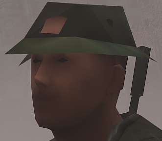
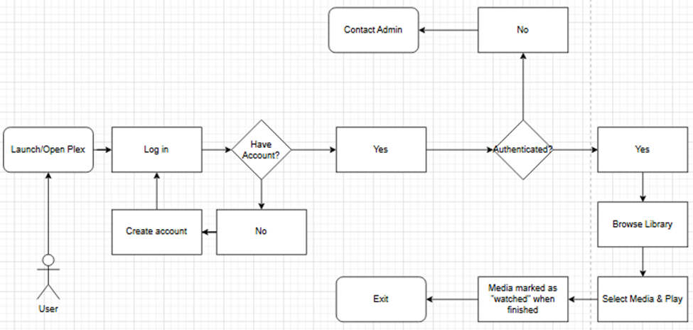
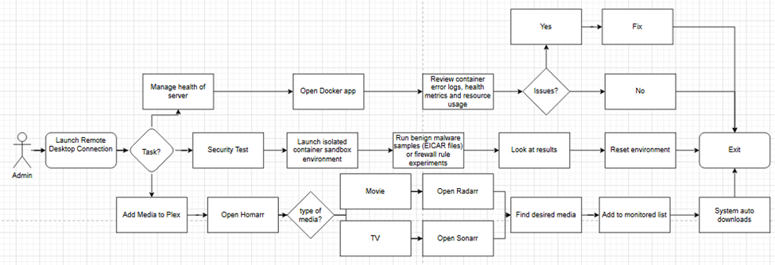

Projects

Ticketing System Demo

PC Build Log
UX Case Study | Home Lab Setup
Overview
Main Goal: Create a centralized, secure media system for myself and family/friends to watch movies/TV, automate downloads, and manage content remotely with minimal daily maintenance.
Secondary Goal: Build a quarantined environment to test security measures and run malware-detection experiments safely.
Key Needs: Reliability, remote access, and strong cybersecurity.
Research
Hardware
- Commercial NAS Platforms: Reviewed Synology and QNAP feature sets (Plex integration, RAID redundancy, mobile apps) to learn best practices for reliability and user onboarding.
- Cloud Services: Compared Google Drive, Dropbox, OneDrive, and Mega Drive against local storage to weigh cost and privacy trade-offs.
- Takeaway: A DIY Docker stack gives greater control over security layers and flexibility to add services like VPNs, automated downloaders, and isolated testing containers.
Community Insight
- Forums & Subreddits: Explored r/homelab, r/cybersecurity, and r/Docker to identify recurring pain points—VPN misconfiguration, accidental data exposure, and container-networking issues.
- Peer Interviews: Spoke with a family member who built a similar setup for advice on hardware selection, UPS considerations, and backup strategies.
Security & Malware Testing Requirements
- Threat Modeling: Analyzed attack patterns (malicious torrents, weak default passwords, container breakouts) to guide isolation strategies.
- Security Standards: Applied OWASP recommendations for container security—network segmentation, SSL certificates, and least-privilege principles.
- Safe Testing Tools: Investigated EICAR test files and MalwareBazaar samples to create a legitimate sandbox environment without endangering production data.
User Goals
- Friendly Users: Want high-quality playback, fast loading, simple login, and reliable remote access with no technical knowledge required.
- Administrator (Me): Needs a platform to experiment with firewall rules, VPN configuration, and malware detection while keeping household media secure and accessible.
Research Outcome: Confirmed that a Docker-based architecture with separate networks, VPN tunneling, and automated backup scripts meets both user requirements and provides the safest path forward.
Design
Design Objectives
- Provide a reliable, user-friendly media-streaming service for family and friends.
- Create a secure sandbox for testing container configurations, firewall rules, and malware simulations.
- Keep the system maintainable and scalable so services can be added or upgraded with minimal downtime.
System Architecture
- Platform Choice: Docker containers separate Plex, Sonarr, Radarr, and other services for flexibility and clean rollbacks.
- Host Hardware: Custom server rack with 100 TB of storage and ample CPU/RAM for transcoding and container overhead, plus a UPS for power protection.
- Networking: Service Network for media apps; Management/Sandbox Network for security tests; VPN Tunnel routes all external traffic to protect public IP exposure.
User Experience
User Flow Map

Admin Flow Map

Implementation
Environment Setup
- Hardware: Custom server rack with 18-core CPU, 32 GB GPU, 128 GB RAM, 100 TB RAID storage, and UPS backup.
- Operating System: Windows 11 Enterprise with Ubuntu LTS for stable Docker hosting.
- Container Platform: Docker and Docker-Compose for modular, isolated containers and easy rollbacks.
Service Deployment
- Core Stack: Plex (media streaming), qBittorrentVPN (secure file acquisition), Homarr (web-based container management).
- Networking: Two Docker networks—Service for media apps and Sandbox for security tests. Configured qBittorrent with VPN for encrypted external access and VPN-only admin dashboards.
Security Implementation
- Deployed a dedicated sandbox container with EICAR test files and ClamAV intrusion-detection tools to safely evaluate firewall rules and malware detection.
- Implemented nightly automated encrypted backups and scheduled Docker health checks.
Automation & Maintenance
- Automated media ingestion using Sonarr/Radarr triggers to refresh the Plex library immediately after downloads.
- Configured a Watchtower container to pull and deploy updated images for automatic security patches.
Testing & Validation
- User Testing: Family members streamed content locally and remotely to confirm playback stability and ease of navigation.
- Security Testing: Ran EICAR malware samples and simulated port-scan attacks inside the sandbox to verify isolation and monitoring alerts.
- Performance Monitoring: Used Docker to track CPU/RAM usage and logs; adjusted container limits to keep peak CPU below 80%.
Outcome: Achieved ~95% uptime across ten months with automatic failover recovery and confirmed secure isolation of the sandbox network—no cross-traffic detected during malware simulations.
About
I’m currently a student at Conestoga College, studying in IT Innovation and Design with a strong focus on technical support and help desk operations. I excel in hardware diagnostics, maintaining home-lab systems and delivering clear, reliable help to users.
- Technical support (Advanced)
- PC building/repair (Advanced)
- OS & tools (Intermediate)
- Networking (Intermediate)
Contact
Email: quinn.carter.it@gmail.com
GitHub: github.com/Qcarter22
Phone: +1 226-888-1932
LinkedIn: Quinn Carter